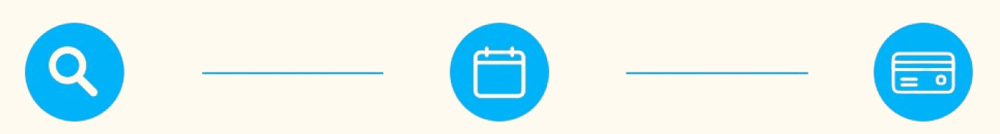

Bonjour!
DogSitter est en cours de conception.
Inscrivez-vous à notre info-lettre pour être informé (e).
DogSitter est en cours de conception.
Inscrivez-vous à notre info-lettre pour être informé (e).
Trouvez un dog sitter près de chez vous
Comment cela fonctionne-t-il ?
Il est facile et sûr d'obtenir une réservation pour dog sitting avec DogSitter.
1. Recherche d'un gardien
Choisissez parmi une variété de dog sitters à proximité.
2. Organiser une rencontre gratuite pour faire connaissance
Rencontrez gratuitement votre gardien avant de faire une réservation pour dog sitting afin de vous assurer qu'il corresponde parfaitement à vos attentes.
3. Confirmez votre réservation en toute sécurité
Bénéficiez d'un service à la clientèle interne et d'une couverture vétérinaire gratuite pour votre chien.
Pourquoi choisir DogSitter pour la garde de mon chien?
Vous et votre chien êtes couverts
Garantie Tranquillité d'Esprit
Une couverture vétérinaire gratuite est incluse avec chaque réservation.
En savoir plusDes gardiens locaux expérimentés
Trouvez des dog sitters locaux qualifiés et fiables. Le profil de chaque gardien est examiné individuellement par notre équipe dédiée de confiance et sécurité. Nous n'acceptons que 15 % des gardiens qui appliquent.
La Garantie DogSitter
Nous nous soucions de votre satisfaction et de votre sécurité, ainsi que de celle de votre chien. Dans les rares cas où votre gardien doit annuler la réservation, notre équipe dévouée travaillera avec vous pour trouver un nouveau gardien.
En savoir plusPaiements sans contact
Le processus de réservation sécurisé et sans espèces de Pawshake signifie que les gardiens ne sont payés qu'une fois qu'ils ont terminé la garde.